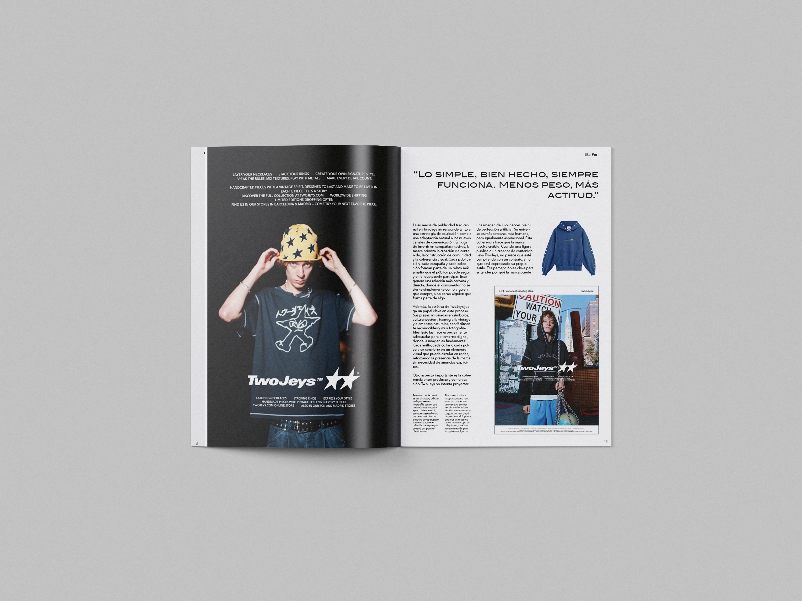
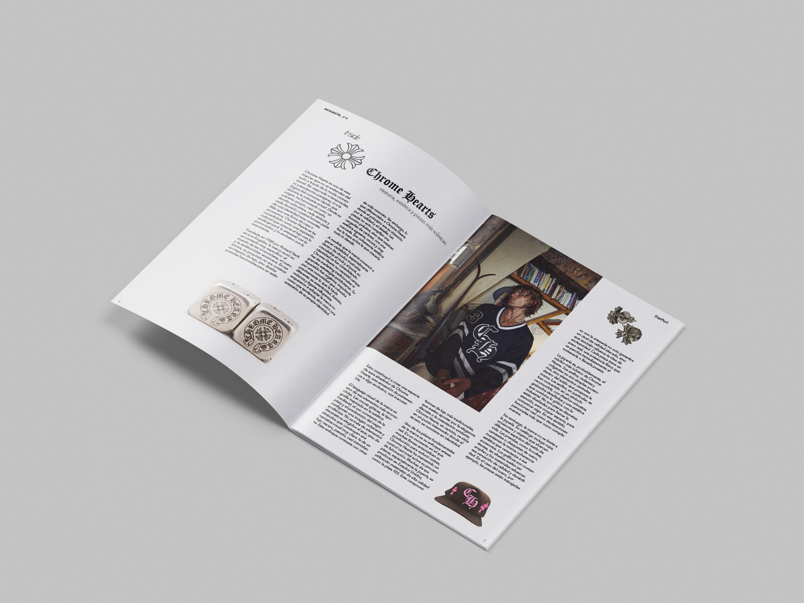
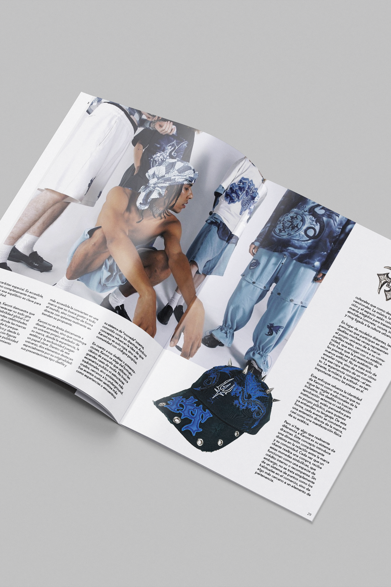
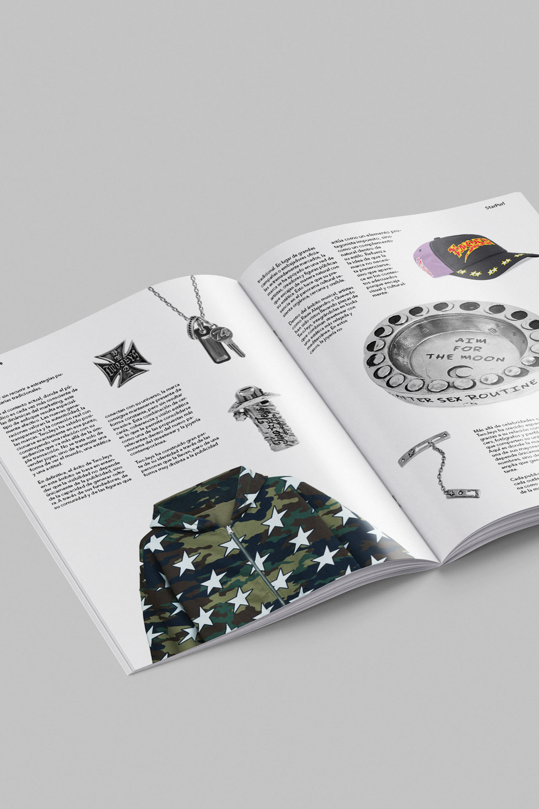

EDITORIAL
Revista StarStabs
Diseño Editorial · Dirección de arte
Año
2026
Disciplina
Experimental
Tipología
Conceptual

01 / CONCEPTO
La idea detrás del proyecto
Esta publicación experimental se centra en la cultura streetwear contemporánea y explora la relación entre la moda, la identidad visual y la expresión gráfica. El proyecto combina tipografías audaces, composiciones dinámicas y manipulación de imágenes con una maquetación convencional y funcional, creando un lenguaje editorial que refleja el carácter urbano, visual y expresivo de esta cultura.




RESULTADO
Una identidad, un lenguaje, una idea.
Menos es más
- Peter Beherens